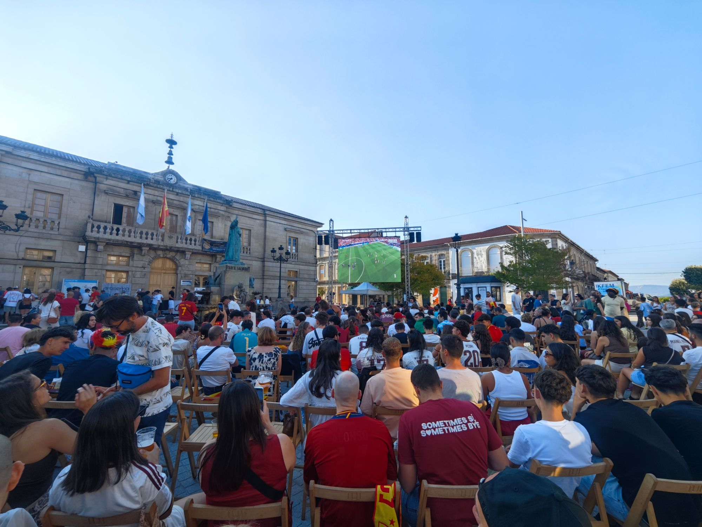

◉
Plaza de la Inmaculada · Tui
Fútbol en pantalla gigante
España
vs
Bélgica
Viernes 10 de julio · 21:00 h
DJ desde las 19:00 h · Ambiente asegurado
La comida y la bebida las ponemos nosotros.
La de Manu